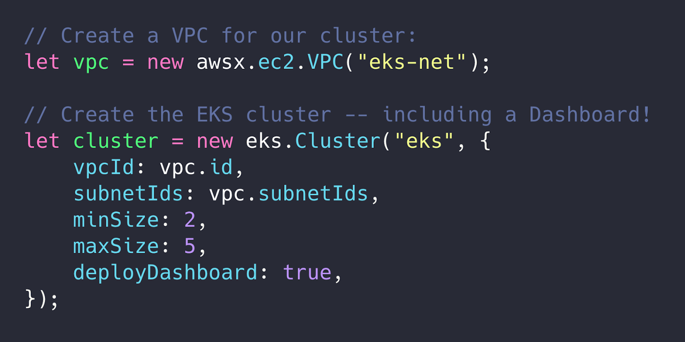
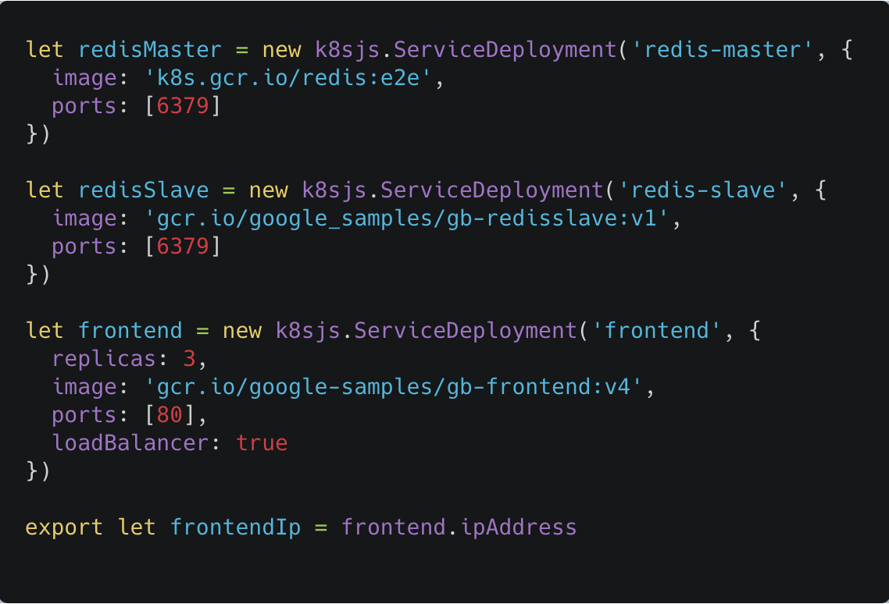
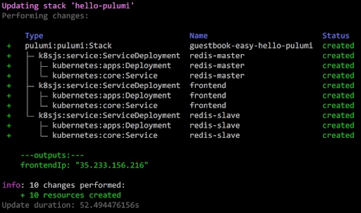
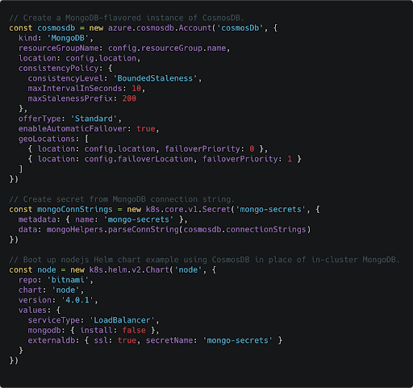
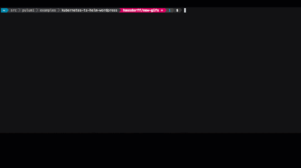
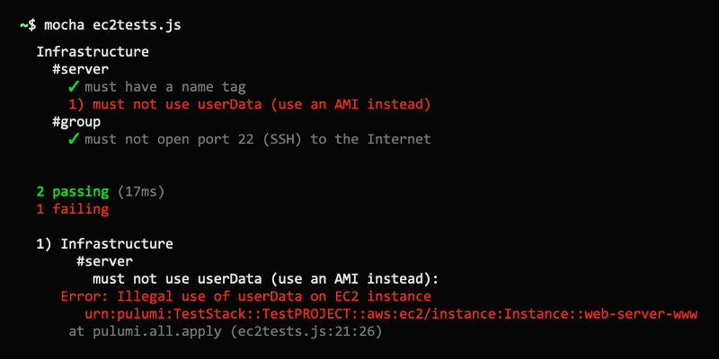

Pulumi: A Better Way to Kubernetes

Kubernetes is a powerful container orchestrator that is being adopted rapidly across the industry. At the same time, it is notoriously complex and presents a steep learning curve for newcomers. Nobody likes programming in YAML, and templates make it even harder. It’s difficult to understand the state of the cluster – Did my deployment succeed? Why isn’t my app working? And we often need to manage hosted cloud resources in addition to Kubernetes ones.
In this post, we will see how Pulumi can help you tame these issues and make Kubernetes more accessible, using familiar languages and your favorite tools. It’s simply Kubernetes made easy!
Clusters as code
Pulumi can seamlessly manage multiple layers of your stack, from the raw infrastructure to Kubernetes resources, and all the way up to serverless app code. Rather than gluing together yet another set of tools, you can create managed Kubernetes clusters with GKE, EKS or AKS and then reference them directly in your Pulumi code!

Apps as code (not YAML!)
Pulumi exposes the full API surface of Kubernetes as classes in your SDK, so you can manage any k8s resource (including CRDs and related CustomResources) in your Pulumi code. Stop trying to work around the limitations of YAML with templates, and reap the benefits of real software development practices: abstraction, conditionals, looping, library support, packaging, testing, debugging, and more! From the obvious (use variables to manage resource metadata), to the more esoteric (gate a canary deployment with Prometheus, Pulumi keeps the simple things simple, and makes the hard things possible.


Integrate with existing Helm charts or manifests
Most projects aren’t greenfield apps, and we know it’s critical to support an incremental transition when you switch tools. Our SDKs allow you to import Helm charts and YAML manifests and then mix and match these resources within your Pulumi program. While you can keep it simple and just import the resources, you have the full power of a programming language at your disposal. Why fight with a complicated YAML templating scheme when you can accomplish the same thing (and much more) with a real programming language? Take advantage of 60 years of software engineering know-how to make your deployments more reproducible and maintainable.
Make full use of your cloud
While you can run stateful workloads on Kubernetes using StatefulSets, it’s often better to use a managed service from your cloud provider. Since Pulumi can manage cloud resources as well as k8s resources it’s easy to bridge that gap! Try adding in a managed database, message queue or object store, and see how much simpler your k8s app can be. When your app is already running in the cloud, think outside of k8s, and use the power of the cloud! It’s far easier to maintain an app at scale if you strategically mix in managed cloud resources.

Debugging failures
It can be daunting to troubleshoot failures in Kubernetes, especially
for new users. What happens after I run kubectl apply?
Why is my app not working?
Even with a detailed guide to follow, it can feel like playing 20
questions with kubectl to get the answers you need. Pulumi’s
Kubernetes provider includes sophisticated logic
to check resource readiness,
and proactively surfaces errors during updates. With Pulumi, it’s far
easier to understand the state of your k8s resources, and
get the information you need to
make changes when something goes wrong.

Integrating with CI/CD
Kubernetes uses an eventual consistency model that can be difficult to integrate with CI/CD systems. How do you know when your application is ready? Common workflows involve scripting kubectl calls and parsing JSON output in Bash. This approach is brittle, and the process is a little different for every Kubernetes resource type. Pulumi’s state reconciliation model is a natural fit for CI/CD systems: review changes with a preview, and then proceed with confidence once an update succeeds. This is great for GitOps and ChatOps workflows. You don’t have to be an expert on the inner workings of Kubernetes to be productive with Pulumi.
Since you can manage a full infrastructure stack with Pulumi, you can [create infrastructure on demand]/blog/data-science-on-demand-spinning-up-a-wallaroo-cluster-is-easy-with-pulumi/) (k8s cluster, databases, networking, object storage, etc.), spin up your application, run tests, and then tear the whole stack back down! This saves you money and builds confidence that you can recover from disaster scenarios.

Learn more
If you’d like to learn about Pulumi and how to manage your infrastructure and Kubernetes through code, click here to get started today. Pulumi is open source and free to use.
As always, you can check out our code on GitHub, follow us on Twitter, subscribe to our YouTube channel, or join our Community Slack channel if you have any questions, need support, or just want to say hello.
If you’d like to chat with our team, or get hands-on assistance with migrating your existing configuration code (including ksonnet programs) to Pulumi, please don’t hesitate to drop us a line.
Posted on